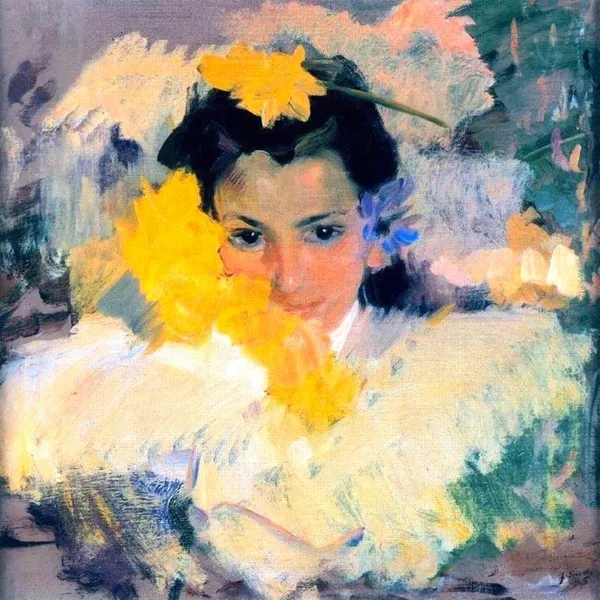

안녕하세요, 라보엠입니다.
오늘은 싱어송라이터 신지훈의 자작곡 '시가 될 이야기'를 소개해 드리겠습니다. 이 곡은 2021년 2월 20일 싱글로 발매된 인디 발라드로, 작사·작곡·편곡 모두 신지훈이 직접 맡아 자신의 언어와 감성을 온전히 담아낸 작품입니다. 제목처럼, 언젠가 한 편의 시로 남을 수밖에 없는 사랑과 이별의 이야기를 차분하고도 밀도 있게 풀어낸 노래입니다.

노래의 시작 – "속절없다는 글의 뜻을 아십니까"
첫 소절부터 분위기가 남다릅니다.
"속절없다는 글의 뜻을 아십니까
난 그렇게 뒷모습 바라봤네"
일상적인 이별 노랫말 대신, 사전에서나 볼 것 같은 단어로 문을 여는 게 인상적입니다. 이미 떠나가는 뒷모습을 바라보면서도 어떻게 할 도리가 없는 상황, 그 무력감과 체념이 "속절없다"는 한 단어에 모두 응축되어 있습니다. 이어서 "고요하게 내리던 소복눈에도 눈물 흘린 날들이었기에"라는 구절이 나오는데, 조용히 쌓이는 눈, 그 속에서 혼자 울던 기억까지 함께 겹쳐지며, 곡의 배경이 차가운 겨울의 한가운데로 옮겨갑니다. 계절감과 정서가 한 번에 그려지는 문장입니다.
가사 – 이별의 장면이 '시'가 되기까지
이 곡의 가사는 처음부터 끝까지 시적인 이미지로 가득하지만, 지나치게 난해하지 않고 감정선을 또렷하게 따라갑니다.
"많은 약속들이 그리도 무거웠나요
그대와도 작별을 건넬 줄이야
오랫동안 꽃피우던 시절들이 이다지도 찬 바람에 흩어지네"
한때 함께 꾸던 미래, 가볍게 나눴던 약속들조차 이제는 서로에게 짐이 되어버린 현실을 인정하는 대목입니다.
후렴에서는 떠나는 이를 붙잡지 않습니다. 오히려 이렇게 말합니다.
"천천히 멀어져줘요 내게서
나와 맺은 추억들 모두
급히 돌아설 것들이었나
한밤의 꿈처럼 잊혀져가네"
여기서 화자는 "갑작스러운 단절"보다, 차라리 천천히 옅어지는 이별을 선택합니다. 너무 급히 돌아서면 추억 자체가 상처로 남을 것 같기에, 시간에 맡겨 조금씩 흐릿해지길 바라는 마음이 느껴집니다.
가운데 부분의 "날 위로할 때만 아껴 부를 거라던 나의 이름을, 낯설도록 서늘한 목소리로 부르는 그대"라는 구절은, 이 곡에서 가장 가슴을 찌르는 장면 중 하나입니다. 한때 세상에서 가장 따뜻한 호명이었던 '나의 이름'이, 이제는 이별을 통보하는 차가운 목소리로 들려오는 순간. 사랑이 완전히 다른 의미를 갖게 되는 그 찰나를 섬세하게 포착합니다.
마지막에는 제목과 연결되는 인상적인 문장이 등장합니다.
"우리 참 많이 미련 없이 커져서 한없이 꿈을 꾸었네
별을 참 많이 세고 또 세어서 시가 되었네"
함께 꾸던 꿈과 별 아래에서 나누었던 시간들이, 결국 한 편의 시가 되어 남았다는 고백입니다. 다 지나가 버린 이야기지만, 시로 남는 순간 다시 한 번 의미를 얻는 셈입니다.
음악 – 잔잔하지만 풍성한, 인디 발라드의 결
'시가 될 이야기'는 장르상 인디·발라드로 분류되며, 어쿠스틱한 밴드 편성과 섬세한 프로덕션이 어우러져 있습니다. 스튜디오 버전에서는 피아노와 기타, 베이스, 드럼, 플루트, 비브라폰 등이 함께 어우러져 겨울 저녁 같은 사운드를 만들어냅니다.
네이버 온스테이지 2.0 라이브에서도 이 곡이 소개되었는데, 라이브 편성에서도 원곡의 분위기를 살리기 위해 부드러운 드럼과 플루트, 비브라폰을 사용해 서정성을 극대화했습니다. 신지훈의 목소리는 과장되지 않게, 그러나 단어마다 힘을 실어 부르는 스타일이라 가사가 귀에 또렷하게 박힙니다.
맺음말
신지훈의 '시가 될 이야기'는 격정적인 이별 직후보다는, 어느 정도 시간이 흐른 뒤 문득 그때의 계절과 장면을 떠올리게 되는 밤에 더 잘 어울립니다. 이미 돌아오지 않을 것을 알면서도, "그 시절의 우리"를 한 번쯤 천천히 되감아 보고 싶을 때입니다.
특히 겨울 끝자락, 눈이 그친 뒤 흩날리는 잔설이나, 늦은 밤 혼자 집으로 돌아가는 길에 이 노래를 들으면, 가사 속 소복눈과 별빛, 뒷모습을 바라보던 장면들이 자연스럽게 포개집니다. 오늘이 그런 밤이라면, 신지훈의 '시가 될 이야기'를 한 번 차분히 들어보시기 바랍니다. 이미 지나가 버린 사랑과 계절이, 한 편의 시가 되어 여전히 내 안에서 조용히 숨 쉬고 있다는 사실을, 이 노래가 다정하게 일깨워 줄지도 모릅니다.